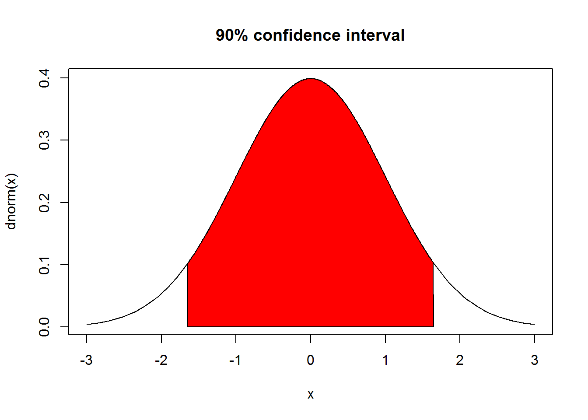
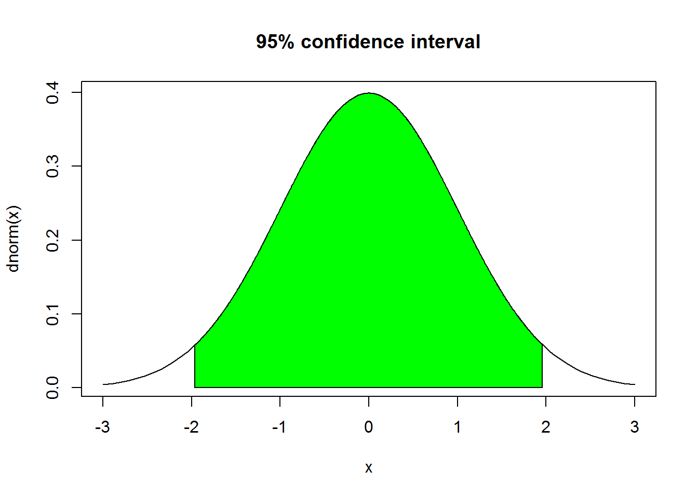

3 Inferential Statistics
You can download the original R notebook document for this page HERE.
3.1 Generating random samples
Suppose that we interview 500 students on campus, and the results show that the average student spends about 100 minutes each day preparing for classes with a standard deviation of 10 minutes.
n <- 500
time.mean <- 100
time.sd <- 10
student <- rnorm(n,mean = time.mean,sd=time.sd)
hist(student,breaks = 10,xlab="Time spent daily (minutes)")print(mean(student))## [1] 99.50537print(sd(student))## [1] 10.188463.2 Sampling distribution of the mean
What if we repeat the interview many times, e.g., 300 times?
n <- 5000
m <- 300
time.mean <- 100
time.sd <- 10
v <- vector()
for(i in 1:m) {
x <- rnorm(n,time.mean,time.sd)
avg <- mean(x)
std <- sd(x)
v <- c(v,avg)
# print(avg)
# print(std/sqrt(n))
}
hist(v,breaks = 15,freq = FALSE,xlab="Sample mean (minutes)")
curve(dnorm(x,mean(v),sd(v)),from = 95,to = 105,add = TRUE,n = 200,col="red")
mean(v)## [1] 99.99084sd(v)## [1] 0.1415653.3 Confidence interval for the mean
q90 <- qnorm(0.95) # 90% confidence interval
curve(dnorm,from = -3,to = 3,main="90% confidence interval")
x <- c(-q90,seq(-q90,q90,by = 0.01),q90)
y <- c(0,dnorm(seq(-q90,q90,by = 0.01)),0)
polygon(x,y,col="red")
qnorm(0.95) = 1.64
q95 <- qnorm(0.975) # 95% confidence interval
curve(dnorm,from = -3,to = 3,main="95% confidence interval")
x <- c(-q95,seq(-q95,q95,by = 0.01),q95)
y <- c(0,dnorm(seq(-q95,q95,by = 0.01)),0)
polygon(x,y,col="green")
qnorm(0.975) = 1.96
q99 <- qnorm(0.995) # 99% confidence interval
curve(dnorm,from = -3,to = 3,main="99% confidence interval")
x <- c(-q99,seq(-q99,q99,by = 0.01),q99)
y <- c(0,dnorm(seq(-q99,q99,by = 0.01)),0)
polygon(x,y,col="blue")qnorm(0.995) = 2.58
Suppose that we interview 500 students on campus, and the results show that the average student spends about 100 minutes each day preparing for classes with a standard deviation of 10 minutes. Find 90%, 95%, and 99% confidence intervals.
q90 <- qnorm(0.950) # 90% confidence interval
round(q90,2)## [1] 1.64q95 <- qnorm(0.975) # 95% confidence interval
round(q95,2)## [1] 1.96q99 <- qnorm(0.995) # 99% confidence interval
round(q99,2)## [1] 2.58std.err <- 10/sqrt(500)
conf.90 <- c(100-q90*std.err,100+q90*std.err) #[99.26, 100.74]
round(conf.90,2)## [1] 99.26 100.74conf.95 <- c(100-q95*std.err,100+q95*std.err) #[99.12, 100.88]
round(conf.95,2)## [1] 99.12 100.88conf.99 <- c(100-q99*std.err,100+q99*std.err) #[98.85, 101.15]
round(conf.99,2)## [1] 98.85 101.153.4 Using mvrnorm function
How to generate random samples from the specified normal distribution with the exact mean and standard deviation?
library(MASS)
x <- mvrnorm(n = 500,mu = 100,Sigma = 100,empirical = TRUE)
mean(x)## [1] 100sd(x)## [1] 103.5 Finding Confidence Interval
3.5.1 Problem
You have a sample from a population. Given that sample, you want to determine a confidence interval for the population’s mean.
3.5.2 Solution
- Apply the t.test function to your sample
x: t.test(x)- The output includes a confidence interval at the 95% confidence level. To see intervals at other levels, use the conf.level argument.
3.5.3 Example
library(MASS)
x <- mvrnorm(n = 500,mu = 100,Sigma = 100,empirical = TRUE)
t.test(x,conf.level = 0.90) #[99.26, 100.74]##
## One Sample t-test
##
## data: x
## t = 223.61, df = 499, p-value < 2.2e-16
## alternative hypothesis: true mean is not equal to 0
## 90 percent confidence interval:
## 99.26303 100.73697
## sample estimates:
## mean of x
## 100t.test(x,conf.level = 0.95) #[99.12, 100.88]##
## One Sample t-test
##
## data: x
## t = 223.61, df = 499, p-value < 2.2e-16
## alternative hypothesis: true mean is not equal to 0
## 95 percent confidence interval:
## 99.12135 100.87865
## sample estimates:
## mean of x
## 100t.test(x,conf.level = 0.99) #[98.84, 101.16]##
## One Sample t-test
##
## data: x
## t = 223.61, df = 499, p-value < 2.2e-16
## alternative hypothesis: true mean is not equal to 0
## 99 percent confidence interval:
## 98.84363 101.15637
## sample estimates:
## mean of x
## 1003.6 One-sample t-test
3.6.1 Problem
Suppose that we interview 50 students on campus, and the results show that the average student spends about 99 minutes each day preparing for classes with a standard deviation of 10 minutes.
Null hypothesis
\(H_o:\mu = 100\)
Alternative hypothesis
\(H_{\alpha}:\mu \neq 100\)
3.6.2 Example
library(MASS)
x <- mvrnorm(n = 500,mu = 99,Sigma = 100,empirical = TRUE)
result <- t.test(x,mu = 100)
result##
## One Sample t-test
##
## data: x
## t = -2.2361, df = 499, p-value = 0.02579
## alternative hypothesis: true mean is not equal to 100
## 95 percent confidence interval:
## 98.12135 99.87865
## sample estimates:
## mean of x
## 99if(result$p.value>0.05){
print("We cannot reject the null hypothesis")
} else {
print("We reject the null hypothesis")}## [1] "We reject the null hypothesis"3.7 Two-sample t-test
3.7.1 Problem
Suppose that we interview 50 students on campus, and the results show that the average student spends about 99 minutes each day preparing for classes with a standard deviation of 10 minutes.
Suppose that we interview another 50 students on campus, and the results show that the average student spends about 98 minutes each day preparing for classes with a standard deviation of 5 minutes.
Null hypothesis
\(H_o: \mu_1 = \mu_2\)
Alternative hypothesis
\(H_a: \mu_1 \neq \mu_2\)
3.7.2 Example
library(MASS)
x1 <- mvrnorm(n = 50,mu = 99,Sigma = 100,empirical = TRUE)
x2 <- mvrnorm(n = 50,mu = 98,Sigma = 25,empirical = TRUE)
result <- t.test(x1,x2)
result##
## Welch Two Sample t-test
##
## data: x1 and x2
## t = 0.63246, df = 72.059, p-value = 0.5291
## alternative hypothesis: true difference in means is not equal to 0
## 95 percent confidence interval:
## -2.151899 4.151899
## sample estimates:
## mean of x mean of y
## 99 98if(result$p.value>0.05){
print("We cannot reject the null hypothesis")
} else {
print("We reject the null hypothesis")}## [1] "We cannot reject the null hypothesis"3.8 Student’s t distribution
3.8.1 Solution
dt(x, df)pt(q, df,lower.tail = TRUE)qt(p, df,lower.tail = TRUE)rt(n, df)
3.8.2 Example
qnorm(0.95)## [1] 1.644854qnorm(0.975)## [1] 1.959964qnorm(0.995)## [1] 2.575829qt(0.95,df = 10)## [1] 1.812461qt(0.975,df = 10)## [1] 2.228139qt(0.995,df = 10)## [1] 3.169273curve(dt(x,df = 1),from = -5,to = 5,ylim = c(0,0.4),col = "red")
curve(dt(x,df = 2),from = -5,to = 5,col = "green",add=TRUE)
curve(dt(x,df = 5),from = -5,to = 5,col = "blue",add = TRUE)
curve(dnorm,add=TRUE,col ="black",lwd=2)3.9 Testing a sample proportion
3.9.1 Problem
We want to test the hypothesis that more than 30% of U.S. households have internet access (with a significance level of 5%). We collect a sample of 150 households and find that 57 have access.
3.9.2 Solution
result <- prop.test(57,n = 150,p = 0.3,alternative = "greater")
result##
## 1-sample proportions test with continuity correction
##
## data: 57 out of 150, null probability 0.3
## X-squared = 4.1984, df = 1, p-value = 0.02023
## alternative hypothesis: true p is greater than 0.3
## 95 percent confidence interval:
## 0.3143179 1.0000000
## sample estimates:
## p
## 0.38if(result$p.value>0.05) {
print("We cannot reject the null hypothesis ")
} else {
print("We accept the alternative hypothesis")
}## [1] "We accept the alternative hypothesis"3.10 Two-sample proportion test
3.10.1 Problem
A random sample of 428 adults from New York City reveals 128 smokers. A random sample of 682 adults from San Francisco reveals 170 smokers. Is the proportion of adult smokers in New York City different from that in San Francisco?
3.10.2 Solution
result <- prop.test(x=c(128,170), n=c(428,682))
result##
## 2-sample test for equality of proportions with continuity
## correction
##
## data: c(128, 170) out of c(428, 682)
## X-squared = 3.0718, df = 1, p-value = 0.07966
## alternative hypothesis: two.sided
## 95 percent confidence interval:
## -0.006283211 0.105880328
## sample estimates:
## prop 1 prop 2
## 0.2990654 0.2492669if(result$p.value>0.05) {
print("We cannot reject the null hypothesis ")
} else {
print("We accept the alternative hypothesis")
}## [1] "We cannot reject the null hypothesis "3.11 Online equation editor
3.12 Getting started with equations
We can write fractions: \(\frac{2}{3}\). We can also handle things like estimated population growth rate, e.g., \(\hat{\lambda}=1.02\). And, \(\sqrt{4}=2\).
\[\alpha, \beta, \gamma, \Gamma\]
\[a \pm b\] \[x \ge 15\] \[a_i \ge 0~~~\forall i\]
3.12.1 Matrix
\[A_{m,n} = \begin{pmatrix} a_{1,1} & a_{1,2} & \cdots & a_{1,n} \\ a_{2,1} & a_{2,2} & \cdots & a_{2,n} \\ \vdots & \vdots & \ddots & \vdots \\ a_{m,1} & a_{m,2} & \cdots & a_{m,n} \end{pmatrix}\]
3.12.2 Statistics
The binomial probability: \[f(y|N,p) = \frac{N!}{y!(N-y)!}\cdot p^y \cdot (1-p)^{N-y} = {{N}\choose{y}} \cdot p^y \cdot (1-p)^{N-y}\]
To calculate the mean of observations of variable , you can use: \[\bar{x} = \frac{1}{n} \sum_{i=1}^{n}x_{i}\]
Note that this equation looks quite nice above where it’s in display math mode. It is more compact but not quite as nice looking if we present it using inline mode, e.g., \(\bar{x} = \frac{1}{n} \sum_{i=1}^{n}x_{i}\).
Let’s do the same with the equation for variance. First the inline version, which is \(\sigma^{2} = \frac{\sum\limits_{i=1}^{n} \left(x_{i} - \bar{x}\right)^{2}} {n-1}\). And then the display mode version: \[\sigma^{2} = \frac{\sum_{i=1}^{n} \left(x_{i} - \bar{x}\right)^{2}} {n-1}\]
And, finally, we’ll end with the standard deviation. Here’s the inline version, \(\sigma = \sqrt{\frac{\sum\limits_{i=1}^{n} \left(x_{i} - \bar{x}\right)^{2}} {n-1}}\). And here’s the display version. \[\sigma = \sqrt{\frac{\sum\limits_{i=1}^{n} \left(x_{i} - \bar{x}\right)^{2}} {n-1}}\]